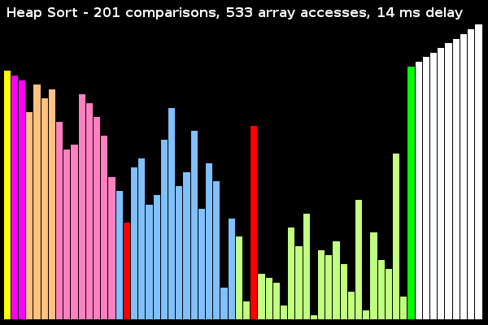

Sound of Sorting: Viral Video on KIT Informatik Webpage
Posted on 2013-10-24 22:45 by Timo Bingmann at Permlink with 0 Comments. Tags: fun sorting frontpage
Little did I expect what would happen when coding the Sound of Sorting demo program. The initial motivation was to create a program that counts the number of comparisons of sorting algorithms, so that the students in our lecture "Algorithms 1" could compare the results of theoretical analysis and real implementations. There were many programs similar to the one I finally made, but there was no program in which the sorting algorithms were easily readable, and not entwined with visualization code. I needed the third-year students to see "simple" code and at the same time have comparison counting and nice visualizations. And none of the existing programs highlighted the internal workings of the algorithms well.
These were the initial goals what became the Sound of Sorting. The program itself took only about seven days of coding work, which was done from the 17th to 21st of May this year. The program had to be finished for the lecture on the 22nd, so there was a hard deadline to meet. The videos were created on the following weekends, and additional algorithms were added later.
Adding sound effects was very much an afterthought, because I had done some similar work previously with manipulating waveforms. Thus there was no learning curve to overcome to have comparisons play sounds. What kind of sound to play, however, needed a lot of artistic touch, trial and error, and the ability to map and transform frequency, oscillators and envelopes as needed. Forming, mixing and bending sound waves as done in the Sound of Sorting requires a mathematical mindset and some appropriate background.
The by-product of this demo program for teaching sort algorithms was the YouTube video "15 Sorting Algorithms in 6 Minutes" which, to my great surprise, went viral on social networks and was viewed 420.000 times to-date. I'm glad that many people with otherwise no connections to algorithmics find this video interesting, and hope that those with further interest view the slower videos, which provide more insight into the algorithms.
Today, the video infected the front page of my current employer: the Department of Informatics at the Karlsruhe Institute of Technology (KIT), which is of course whom I originally made the demo program for. The text, which I wrote for that occasion, can be viewed in German at the original news article about the viral video (or in the screenshots below). I have translated it into English below, since it contains some further comments about the video.
| (Screenshot of www.informatik.kit.edu from 2013-10-24) | (Screenshot of news article on www.informatik.kit.edu from 2013-10-24) |
Creative Video from Course "Algorithms 1" Achieves Tremendous Reach on YouTube
Sorting algorithms are an integral part of basic training for computer science. The problem is simple: sort a set of objects in a given order. The algorithms developed for this purpose are very diverse, yet usually easy to analyze with appropriate mathematical tools. These properties make sorting algorithms an instructive introduction to the methods of theoretical computer science. In addition to the many everyday sorting operations on the computer, these algorithms are also used at large scale in databases, search engines and MapReduce processing of Big Data.
Students of computer science learn the theory of different sorting algorithms at the Karlsruhe Institute of Technology (KIT) in the 2nd semester in the course "Algorithms 1". In the summer semester 2013, this course was taught by Professor Peter Sanders. His staff have come up with a particularly creative solution for the visualization of sorting that caused quite a stir in the exercise sessions and also far beyond.
The demo program determines experimentally the number of comparison operations required by an algorithm and represents the processed array graphically. Additionally, sound effects are generated in real-time that depend only on the values currently being compared. Beyond the audio effects, different colors are used to show counter variables and states of the algorithms in the visualization.
The result is an amazingly artistic representation of algorithmics. The YouTube Video "15 Sorting Algorithms in 6 Minutes" was recorded with the demo program. It turned out to be highly viral and spread quickly in the respective social networks. To-date it was already viewed over 430,000 times.
And this is how it works:
The array entries currently moved or read by the algorithm are marked red. When two values are compared, the two numeric values are transformed into frequencies between 120 Hz and 1.2 kHz, which are outputted with a triangular oscillator. Other colors are used for the visualization of internal pointers or current work areas of recursive algorithms. For example, in quick sort the current pivot element is marked green, and the current moving pointer is highlighted in blue. For selection sort, insertion sort, and similar the currently sorted subsection is separated by green elements. The many colors in the visualization of heap sort represent the levels of the binary max-heap built implicitly in the array.
For practitioners, the behavior of std::sort is of particular interest, as it is the default sort function in C++ and probably the most widely-used sorting routine at all. For the visualization of std::sort, the unmodified library function was applied to an instrumented array, which provides iterators and comparators that monitor the operations of the algorithm. Thus, in the "Sound of Sorting" the actions of the default sort functions of C++ are displayed directly without modification (or color comments).

Some of the 15 algorithms were explained in the exercise sessions on 2013-05-22 and on 2013-05-29, which can be review on the KIT-Informatik YouTube channel. The demo program itself was first presented at 2013-05-22. In the coming summer semester 2014, all first-year students have the opportunity to experience the demo program live and with explanations in the lecture hall.
(The exercise sessions are in German.)
Exercise session from 2013-05-22: selection, insertion, quick, merge sort, std::sort and std::stable_sort
Exercise session from 2013-05-29: heap sort

{kind=link}
{kind=link}